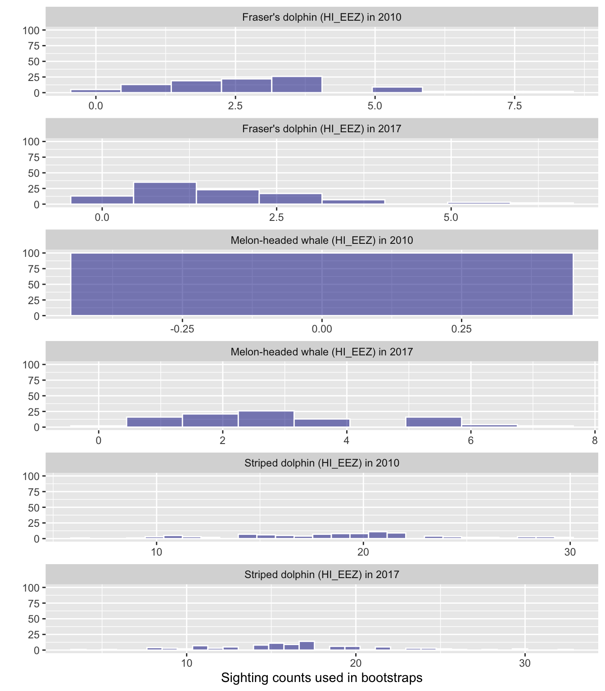

10 Trend analysis
When a species’ density appears to change dramatically from one survey year to the next, it could be due to several factors: the species’ abundance may have changed; its range may have shifted; or the timing of its migratory movements may have shifted. This apparent change could also be due solely to random chance: you can sample the exact same population in two different surveys, and you are liable to produce different abundance estimates due simply to random variation in how often you encounter your target species. In other words, random variation in the encounter rate may lead you to estimate a change in abundance, when in fact there is no change.
For this reason, whenever you suspect that abundance has changed between years – i.e., whenever the confidence intervals for two years do not overlap – it is good practice to carry out follow-up tests. One such test was developed in (Bradford et al. 2020 and Bradford et al. (2021). That test has been provided in LTabundR with the function er_simulator(), which refers to a simulation-based test of random variation in the encounter rate (ER).
This function uses randomization simulations to test for the probability that year-to-year changes observed in a species’ encounter rate are due to random sampling variation (and not actual change in the encounter rate). More specifcially, this function uses bootstrap sampling of survey segments to see if random variation in sampling could possibly produce an apparent but immaterial change in encounter rate across years.
You will find full analytical details in the Appendix to Bradford et al. (2020) for analytical details, but briefly: in each bootstrap iteration, survey segments are resampled in a way that preserves the proportion of effort occurring within each geostratum in the data. The resampled data are used to calculate the overall ER across all survey years, since the null hypothesis is that the ER does not change across years. This overall ER is used to predict the number of sightings in each year, based on the distance covered by the resampled segments in each year. This process is repeated (typically hundreds to thousands of times) to produce a distribution of predicted sighting counts in each year. This distribution reflects the range of ERs that could be possible due simply to random variation and not to underlying changes in abundance. These distributions are compared to the actual number of sightings observed in their respective year. The fraction of simulated sightings counts that are more extreme than the observed count reflects the probability that the observed count is due to random sample variation alone.
For example, Bradford et al. (2021) found non-overlapping confidence intervals in their estimates of Bryde’s whale abundance in 2002, 2010, and 2017. To test for the significance of these trends, they carried out the “ER simulator” routine described above. In LTabundR, we would carry out the same analysis as follows:
Take your processed data:
Filter it to systematic effort in the years of interest:
cruzi <-
filter_cruz(cruz,
analysis_only = TRUE,
years = c(2002, 2010, 2017),
regions = 'HI_EEZ',
eff_types = 'S',
bft_range = 0:6)Conduct the ER simulation, passing the species code for the Bryde’s whale ("072"). For the purposes of this example, we will only use 100 iterations.
This routine provides a list with two slots:
The summary slot returns the p-value for each year, i.e., the chances that the observed number of sightings was due purely to random variation in the encounter rate.
In this example, the encounter rates observed in 2002 and 2010 are very likely due to some process other than random variation in the encounter rate, such as range shifts, seasonal movement timing shifts, and/or changes in abundance. However, the observed encounter rate in 2017 could easily be explained by random variation in the ER.
The details slot returns the simulation predictions for each year, which can be used to replicate the histograms that are printed when the function is run.

A dataframe with a row for each year. Columns provide the number of observations of the species of interest during systematic effort, and the p-value of the test. The p-value represents the fraction of simulated encounter rates that exceed the observed encounter rate.